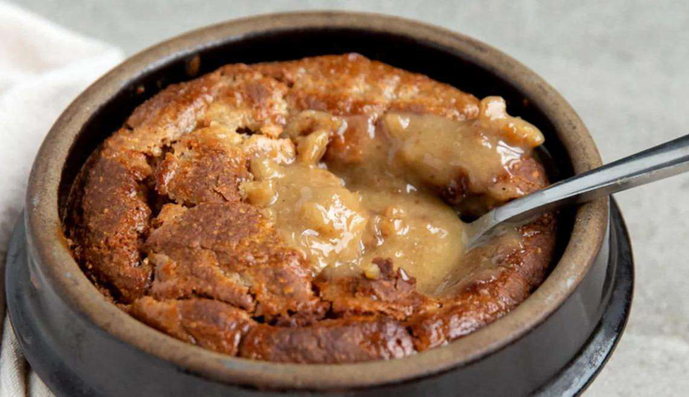

Caramilk Baked Oats
Ingredients
- 100 g Banana
- 1.0 egg
- 40 g oats
- 10 g Maple Syrup Sugar Free
- 2 g Baking Powder
- 2 g Salt
- 25 g Cadbury Caramilk Chocolate
Instructions
- Preheat your oven to 175
- Place your oats, banana, egg, maple syrup, baking powder and salt into a blender
- Blend until smooth and leave the batter to rest for 10 minutes
- Pour into a oven safe dish
- Push your pieces of Caramilk in to the batter
- Bake in the oven for 20 min or until cooked through
Source PDF page 14